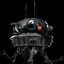

Imperial Probe Droid
Imperial Droid who reveals and tracks enemies with Target Lock
Imperial Droid who reveals and tracks enemies with Target Lock
Deal Physical damage to target enemy with a 80% chance to Expose them for 2 turns.
Dispel all buffs on all enemies with a 75% chance to inflict Target Lock for 2 turns. Then, remove 5% Turn Meter from Target Locked enemies. This attack can't be Evaded.
Imperial Probe Droid instantly defeats itself. Deal massive damage to target enemy. Deal bonus damage to other enemies equal to 30% of their Max Health. Expose all Target Locked enemies for 2 turns. This attack can't be Evaded. While Imperial Probe Droid has full Health, or has no active allies, the cooldown of this ability is set to max and can't be reduced.

Imperial Probe Droid has +50% Max Health. At the end of each Droid ally turn, at the end of each Empire ally turn, and at the end of each Rebel enemy turn, Imperial Probe Droid gains 3% Turn Meter.
While Imperial Probe Droid is active, Target Locked enemies have -25% Evasion and can't gain buffs.
Omicron Boost : While in Territory Battles: At the start of battle, Imperial Probe Droid loses all Protection and gains that much Max Health. Imperial Probe Droid revives with 100% Health after using Self-Destruct and ignores Taunt effects. At the start of each encounter, Imperial Probe Droid is revived with 100% Health. Whenever Imperial Probe Droid uses Self-Destruct, the target enemy takes additional damage equal to 200% of Imperial Probe Droid's Max Health and other Empire allies gain Offense equal to 300% of Imperial Probe Droid's Offense (stacking) until they're defeated.
Imperial Probe Droid gains a Rank whenever it Exposes a Target Locked enemy. Whenever Imperial Probe Droid is defeated, its Rank is reset to Rank 1.
If all allies are ISB and there is another Rank 3 ISB ally, Imperial Probe Droid revives at full Health and Protection whenever defeated, which can't be prevented. If Major Partagaz is the ally in the Leader slot, all Imperial Probe Droid's chance effects are increased to 100%.
- At Rank 2, whenever Imperial Probe Droid is defeated, inflict all enemies with Healing Immunity for 1 turn, which can't be resisted
- At Rank 3, Healing Immunity can't be dispelled